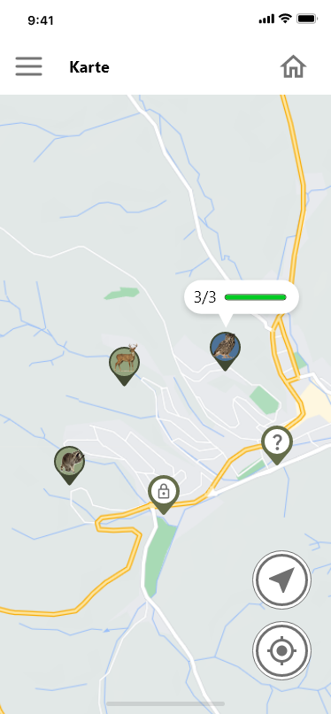

Du bist gerne draußen unterwegs und möchtest die Natur näher kennenlernen? Dann bist du hier genau richtig!
Mit unsere App Forex Discovery kannst du spielerisch die Tierwelt im Schwarzwald entdecken. Unser Name Forex Discovery setzt sich aus den Worten "forest" und "explore" zusammen.
Das Spielkonzept ist kinderleicht. Durch einen Klick auf die Karte siehst du, wo sich Tiere in deiner realen Umgebung befinden. Wenn du ein Tier gefunden hast, machst du dich auf den Weg. Dort angekommen kannst du mit der AR-Funktion die 3D-Modelle der Tiere ausfindig machen. Sobald du das gesuchte Tier gefunden hast, kannst du verschiedene Challenges und Aufgaben annehmen, um dich mit dem Tier anzufreunden und Informationen zu erhalten.
Entdecke die Tierwelt und erreiche verschiedene Expertenlevel wie beispielsweise den "Waldexperten", um neue Tiere und Informationen freizuschalten.


Mit den folgenden QR-Codes kannst du die AR-Experience selbst einmal ausprobieren (Adobe Aero funktioniert leider nur, wenn du ein IPhone oder IPad verwendest).
1. Klicke den Link an oder scanne den QR-Code
2. Erfasse eine gerade Fläche, indem du dein Handy bewegst.
3. Plaziere den kleinen Kreis in der Mitte des Displays.
4. Bewege nun das Handy in alle Richtungen, um Tiere und Objekte zu entdecken.
Einige Tiere und Objekte führen Aktionen aus oder spielen einen Sound ab, wenn du sie antippst!